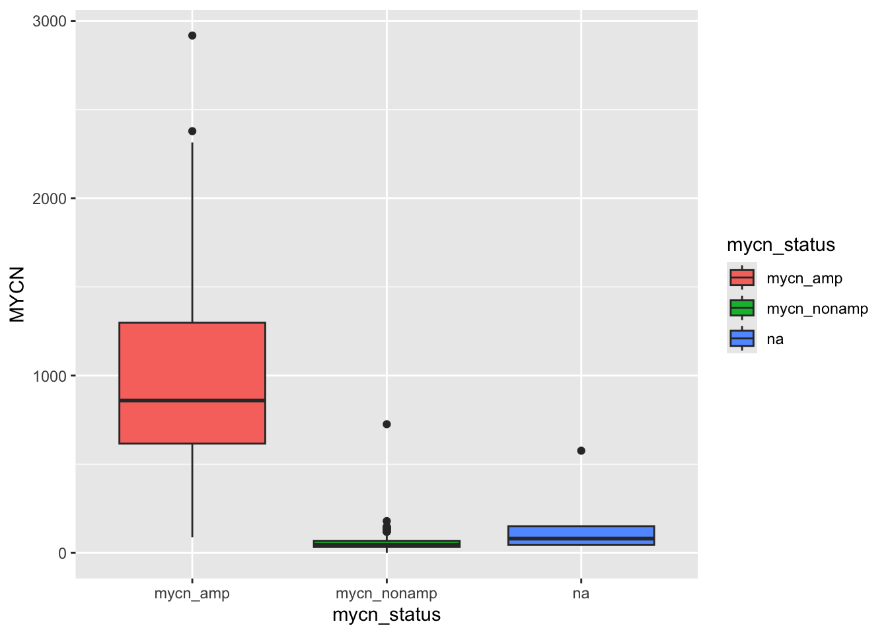
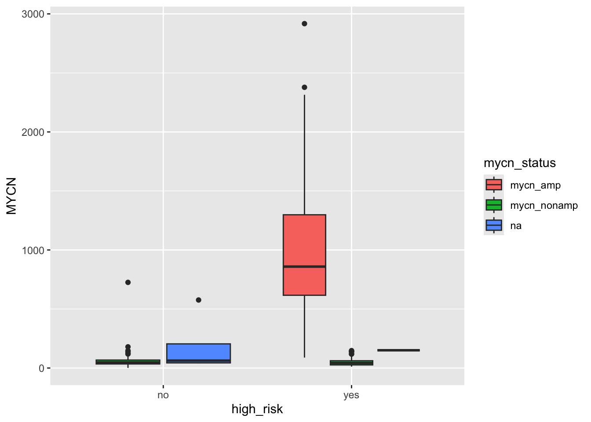
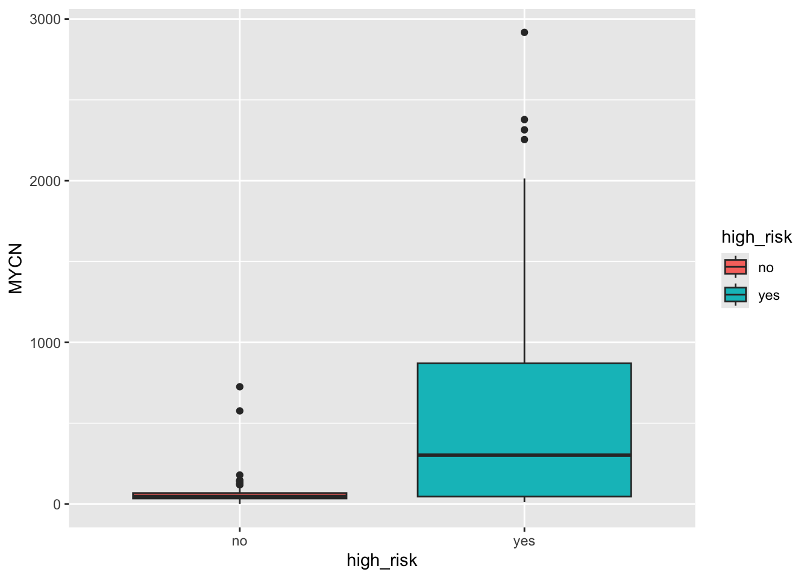

3 Processamento de dados públicos de neuroblastoma
3.1 Origem dos dados
Os dados analisados neste módulo têm origem na base de dados genômicos R2.
A plataforma R2 é uma ferramenta de análise e visualização genômica online de livre acesso que pode analisar uma grande coleção de dados públicos, mas também permite a análise protegida de conjuntos de dados privados, conforme indicado por Rijswijk (2024).
A R2 consiste em um banco de dados que armazena as informações genômicas, acoplado a um amplo conjunto de ferramentas para analisar/visualizar os conjuntos de dados.
Mais informações sobre a plataforma R2 pode ser encontradas no site da plataforma:
https://hgserver1.amc.nl/cgi-bin/r2/main.cgi
3.2 Carregando dados pre-processados de R2
Nesta parte, vamos carregar uma dataframe contendo dados baixados de R2 em que já fizemos pre-processamento. Vamos gerar algumas visualizações para nos familiarizarmos com os dados. O objeto r2_gse62564_GSVA_Metadata.rds deve ser baixado da pasta no Google Drive no seguinte link: https://drive.google.com/drive/folders/1Kkos4HK2EP4ntrQOJE0mrHYlpeMa1yi4?usp=sharing
Uma vez que o arquivo é baixado, pode-se carregá-lo no ambiente R usando a função readRDS, como feito abaixo:
r2_gse62564_GSVA_Metadata <- readRDS("./data/r2_gse62564_GSVA_Metadata.rds")No neuroblastoma, o principal sistema de classificação de risco classifica os pacientes usando características como idade, estadiamento, histologia e status de amplificação do MYCN.
O prognóstico é a associação entre as características do tumor e a sobrevida do paciente.
O MYCN é um gene que codifica um fator de transcrição muito importante no prognóstico do tumor.
Vamos analisar a expressão do MYCN comparada pelo grupo de risco do neuroblastoma.
Primeiro, vamos ver que tipo de variável é o status do MYCN e a expressão do MYCN.
Verificar a classe da variável mycn_status:
class(r2_gse62564_GSVA_Metadata$mycn_status)## [1] "character"Verificar a classe da variável MYCN:
class(r2_gse62564_GSVA_Metadata$MYCN)## [1] "character"Ambos são do tipo “character”. Para plotar, precisamos fazer com que a expressão MYCN seja do tipo numérico:
r2_gse62564_GSVA_Metadata$MYCN <- as.numeric(
r2_gse62564_GSVA_Metadata$MYCN)Verificar novamente a classe da variável MYCN:
class(r2_gse62564_GSVA_Metadata$MYCN)## [1] "numeric"Agora a classe de MYCN é um vetor numérico.
3.3 Primeiros gráficos com dados de neuroblastoma
3.3.1 Mycn_status vs Expressão de MYCN
Vamos plotar uma figura com a variável mycn_status no eixo X e expressão de MYCN no eixo Y.
Vamos tentar ver se o ggplot, que usamos antes, considera a variável mycn_status categórica como ela é agora.
library(ggplot2)
ggplot(r2_gse62564_GSVA_Metadata, aes(x=mycn_status, y=MYCN,
fill=mycn_status)) +
geom_boxplot()
Vemos que existem três categorias de mycn_status: mycn_amp, mycn_nonamp e nas. mycn_amp significa amplificação de MYCN, um fator de mau prognóstico. mycn_nonamp significa ausência de amplificação de MYCN. NA significa que não há informações sobre o status de MYCN. Vemos que a amplificação de MYCN está altamente associada à expressão de MYCN, no eixo Y. Por enquanto, não vamos nos preocupar nem com a formatação dos rótulos X e Y nem com os valores N/A do status de amplificação MYCN.
3.3.2 Alto Risco vs expressão de MYCN
Podemos plotar o status de alto risco vs. amplificação MYCN e deixar o argumento de preenchimento como mycn_status
library(ggplot2)
ggplot(r2_gse62564_GSVA_Metadata, aes(x=high_risk, y=MYCN,
fill=mycn_status)) +
geom_boxplot()
Aqui vemos que a maior parte dos pacientes de alto risco (High Risk) apresentam também amplificação de MYCN e que nesses pacientes, a expressão de MYCN é alta.
Podemos ainda querer ver apenas a expressão de MYCN no grupo de alto risco, usando o parâmetro fill=high_risk:
library(ggplot2)
ggplot(r2_gse62564_GSVA_Metadata, aes(x=high_risk, y=MYCN,
fill=high_risk)) +
geom_boxplot()
Onde confirmamos que a expressão de MYCN é maior nos pacientes de alto risco (High Risk).